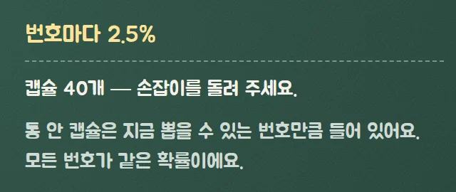
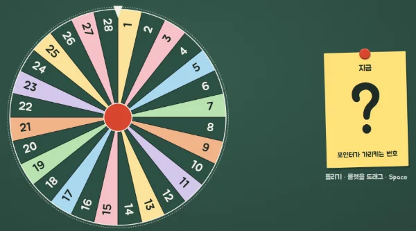
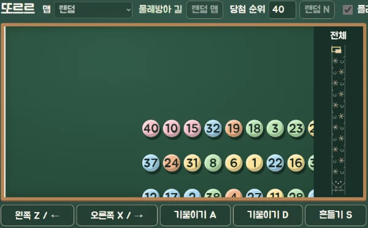
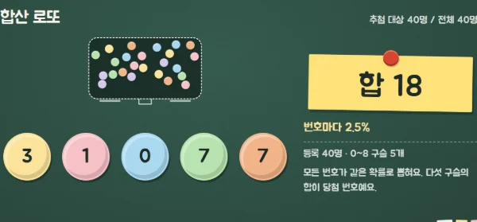
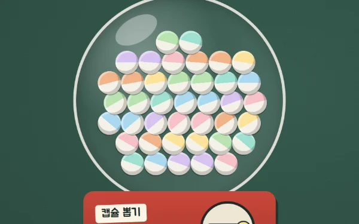
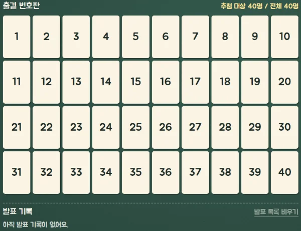
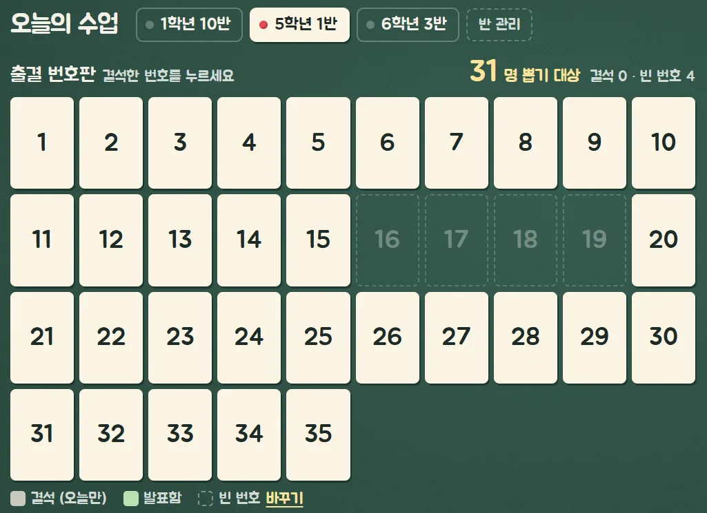
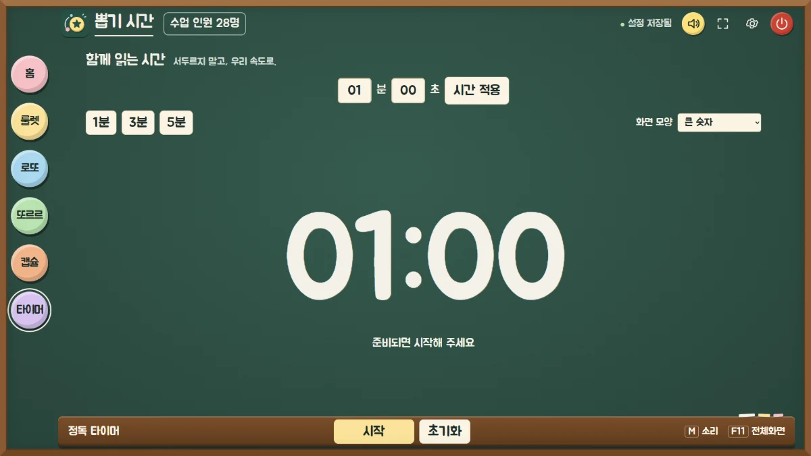

100만번씩
룰렛 · 캡슐 · 로또: 28명 반과 40명 반에서 각각, 번호마다 뽑힌 횟수
승부수: 기본 6칸이 정한 비율대로 나오는지
판정: 모두 「공평」
무료교실 발표자 뽑기 · Windows용 프로그램
설치·인터넷·학생 이름 없이, Windows 파일 하나로 써요.
Windows PC에서 받아 주세요. 받는 곳과 확인 방법은 아래 「받기」에 있어요.

파일을 두 번 누르면 바로 열려요. USB에 넣어 다녀도 돼요.
자세히 보기: 설치 없이인터넷이 없어도 뽑기는 모두 돼요.
자세히 보기: 인터넷 없이이름 칸이 없어요. 번호만 써요.
자세히 보기: 학생 이름 없이공평성 검증
룰렛·캡슐·로또·승부수는 각 100만 번, 또르르는 36만 7,500판을 돌려 확인했어요.
앱의 추첨 코드를 그대로 돌려 번호마다(승부수는 칸마다) 뽑힌 횟수를 셌어요. 모두 「공평」으로 판정됐어요. (2026년 9월 24일 검증)
외부 기관이 아닌 만든 사람이 직접 검증했어요. 자세한 수치는 보고서에 있어요.

100만번씩
룰렛 · 캡슐 · 로또: 28명 반과 40명 반에서 각각, 번호마다 뽑힌 횟수
승부수: 기본 6칸이 정한 비율대로 나오는지
판정: 모두 「공평」
36만 7,500판
또르르 · 28명 · 실제 물리 경주
판정: 「공평」
※ 판마다 맵 4개 중 하나를 무작위로 골라, 막대기를 켠 채 아무도 건드리지 않은 경기에서 1등 당첨(기본값)만 잰 결과예요. 선생님이 막대기·기울이기·흔들기를 쓰면 결과가 달라질 수 있어요.
28명이면 번호마다 1등 할 확률은 3.57%예요. 36만 7,500판에서 1등이 가장 많았던 5번은 3.63%, 가장 적었던 26번은 3.52%였어요.
통계 검사(카이제곱) 기준 p ≥ 0.01이면 「공평」으로 판정했어요. 또르르는 p = 0.86이었어요.
PDF · 약 173KB · 새 탭에서 열려요
룰렛·로또·캡슐은 당첨 번호를 먼저 공평하게 정한 뒤, 그다음에 연출을 보여 줘요. 막판에 칸을 넘어가거나 되돌아오는 장면도 연출일 뿐, 확률은 그대로예요.
또르르는 미리 정해 둔 당첨자가 없어요. 공이 실제로 도착한 순서대로 정해져요.
특정 번호가 뽑히도록 정하는 기능은 없어요.

뽑기 도구
수업에 맞는 뽑기를 골라 쓰세요.

번호마다 칸 크기가 같은 원판이에요. Space를 누르거나 원판을 끌어 돌려요. 막판에 아슬아슬한 연출이 나와도 당첨은 그 전에 정해져 있어요.

번호 공들이 긴 코스를 실제로 굴러 내려오는 경주예요. 맵은 네 가지(자 미끄럼틀 · 못밭과 풍차 · 깔때기 다섯 고개 · 물레방아 길)이고, 1등부터 꼴찌까지, 몇 번째로 도착한 공을 뽑을지 정할 수 있어요. 미니맵으로 코스를 살펴보고, 2배 빠르기로 빨리 볼 수도 있어요.
선생님이 막대기(← → · Z X), 기울이기(A · D), 흔들기(S)를 쓰면 결과가 달라질 수 있어요. 설정에서 막대기를 꺼도 기울이기와 흔들기는 그대로 남아요.

구슬 다섯 개의 합이 당첨 번호예요. 번호를 먼저 공평하게 정한 뒤 합이 그 번호가 되는 구슬을 보여 주기 때문에, 번호마다 확률이 같아요.

통 안에는 지금 뽑을 수 있는 번호만큼 캡슐이 들어 있어요. 손잡이를 돌리면 잠시 뒤 캡슐 하나가 열려요. 「발표자 제외」를 켜면 이미 발표한 번호의 캡슐은 통에서 빠져요.
당첨된 학생이 한 번 더 돌리는 작은 룰렛이에요. 칸은 2~8개로 바꿀 수 있고 확률도 선생님이 정해요. 「수업 종료」 5%만 고정이에요.
| 기본 칸 | 확률 |
|---|---|
| 2문장 발표 | 50% |
| 다른 사람 지명 | 15% |
| 한 명 더! | 15% |
| 재추첨 | 8% |
| 패스권 | 7% |
| 수업 종료 (고정) | 5% |
수업 흐름
홈 위쪽 이름표로 반을 골라요. 결석한 번호를 한 번 누르면 그날 뽑기에서 빠져요.
결과 창에서 「발표하기」를 누르면 기록되고, 「승부수」로 한 번 더 돌릴 수도 있어요.
이미 발표한 학생은 다시 뽑히지 않아요. 오늘 누가 발표했는지도 한 화면에서 보여요.


발표 기록은 프로그램을 끄면 지워져요. 학생 기록이 남지 않도록 만들었어요.
한 번 뽑는 데 걸리는 시간: 캡슐은 손잡이를 돌리고 약 4초 뒤 열려요. 또르르는 1등 도착까지 평균 약 29초예요(검사에서 잰 게임 속 시간). 「2배 빠르기」로 빨리 볼 수도 있어요.
새 기능 · 1.3.2
1~15번, 20~35번처럼 번호가 떨어진 반은 설정 › 우리 반에서 없는 번호를 한 번만 눌러 두세요. 빈 번호는 룰렛·로또·또르르·캡슐 어디에서도 뽑히지 않고, 수업마다 결석으로 누를 필요가 없어요.
반은 여러 개 저장해 두고 홈에서 이름표로 바로 바꿀 수 있어요.

초록 칠판 위에 분필 글씨처럼 큰 글자로 보여 줘요. 프로젝터나 TV에 띄우고 F11을 누르면 전체화면이 돼요. 마우스 없이 키보드로도 돼요.
| 키 | 하는 일 |
|---|---|
| Space | 시작 |
| M | 소리 켜기·끄기 |
| ESC | 홈으로 |
| F11 | 전체화면 |
| ← → 또는 Z X | 또르르 막대기 (설정에서 끌 수 있어요) |
| A D · S | 또르르 기울이기 · 흔들기 (막대기를 꺼도 남아요) |
분과 초를 넣고 시작하면 끝날 때 종료음이 한 번 울려요. 다른 화면으로 가거나 창을 내리면 저절로 멈춰요.
화면 10가지

안심하고 쓰기
번호만 써요. 학생 이름을 넣는 곳 자체가 없어요.
학생 번호·결석·발표 기록은 밖으로 보내지 않아요. 프로그램을 끄면 기록도 사라져요.
인터넷은 업데이트와 공지를 확인할 때, 그리고 타이머에서 유튜브 영상을 고를 때만 써요. 학교망이 끊겨도 뽑기는 그대로 돼요.
계정도 필요 없어요. 파일 옆에 생기는 data 폴더를 함께 옮기면 설정도 그대로예요.
무료로 받기
설치 없이 받은 파일을 두 번 눌러 열어요. 처음 열 때 Windows 경고가 뜨면 오른쪽 안내를 따라 주세요.
무료로 받기ppobgi-sigan.exe · Windows 64비트 · 약 355MB · 현재 버전 1.3.2
휴대폰에서는 쓸 수 없어요. Windows PC에서 받아 주세요.
ppobgi-sigan.exe, 크기는 355,472,506바이트(약 355MB)예요.9d27c21547ad6ee964af18cedc69bd22e4a079ed939c8867bb3e5e76c2e667bf만든 사람: 이건윤gunyoon0322@naver.com
ppobgi-sigan.exe를 원하는 폴더나 USB에 둬요.data 폴더에 저장돼요. 폴더째 옮기면 설정도 함께 가요.이런 경우에는 쓰기 어려워요: 맥이나 태블릿으로 수업하시는 경우, 학기 내내 발표 기록을 쌓아 두셔야 하는 경우, 이름으로 뽑고 싶으신 경우, 41명 이상 합반 수업.
| 운영체제 | Windows 10 · 11 64비트 (Windows 11에서 확인) |
|---|---|
| Windows 10 | 아직 확인하지 못했어요 |
| 지원하지 않음 | macOS · 태블릿 · 휴대폰 |
| 파일 크기 | 약 355MB, 파일 하나 |
| 메모리 | 4GB 이상 (권장 8GB) |
| 여유 공간 | 1.5GB 이상 (업데이트 포함) |
| 화면 | 1366×768 이상 |
| 설치 · 계정 | 필요 없어요 |
| 인터넷 | 없어도 뽑기는 모두 돼요 (업데이트 · 공지 · 유튜브 타이머에만 사용) |
| 반 · 번호 | 반마다 1~40번, 빈 번호 지정 가능 (반 최대 30개) |
| 현재 판 | 1.3.2 |
| 켜지는 시간 | 약 1.1초 (검사 PC 측정) |
네, 무료예요. 받아서 바로 쓰시면 돼요.
설치 없이 파일 하나로 켜지는 Windows 64비트 프로그램이에요. 아래 표는 만든 사람의 PC에서 CPU를 일부러 느리게 만들어 가며 잰 결과로 정한 추정치예요. 실제 교실 노트북에서 확인한 값은 아니에요.
| 최소 | 권장 | |
|---|---|---|
| 운영체제 | Windows 10 · 11 (64비트) | Windows 11 (64비트) |
| CPU | 보급형 노트북 CPU (셀러론 N4000 · 펜티엄 실버급) | 코어 i3 8세대 · 라이젠 3 이상 |
| 메모리 | 4GB | 8GB 이상 |
| 여유 공간 | 1.5GB (업데이트 포함) | 2GB 이상 |
| 그래픽 | 따로 필요 없어요 (내장 그래픽) | 4K TV에 연결하면 4K 출력이 되는 그래픽 |
| 화면 | 1366×768 | 1920×1080 · 4K TV |
가장 무거운 것은 또르르(공 40개 경주)예요. 만든 사람의 PC(라이젠 7 9700X)에서 CPU를 10배 느리게 해도 1초에 60장면으로 부드러웠고, 16배부터 끊기기 시작했어요. 그래픽 가속을 끈 상태(그래픽이 약한 PC와 비슷한 조건)에서도 끊김 없이 돌았어요. 프로그램이 쓰는 메모리는 실제 화면(2560×1440)에서 약 0.6GB였어요. 켤 때마다 임시 폴더에 약 355MB를 풀고, 업데이트 때는 새 파일과 이전 파일을 함께 보관해서 여유 공간이 더 필요해요. Windows 7 · 8, 맥, 태블릿에서는 실행되지 않아요.
코드 서명이 없어서 「Windows의 PC 보호」 경고가 뜰 수 있어요. 「추가 정보」를 누른 뒤 「실행」을 눌러 주세요. 학교 PC 설정에 따라 「실행」이 보이지 않으면 학교 전산 담당 선생님께 여쭤 주세요. 켜진 뒤 받는 업데이트 파일은 서명이 맞을 때만 적용해요.
학생 이름을 넣는 칸이 없어요. 번호·결석·발표 기록은 어디로도 보내지 않고, 프로그램을 끄면 사라져요. 인터넷은 업데이트·공지 확인과 선생님이 고른 유튜브 타이머 화면에만 써요.
룰렛·로또·캡슐은 당첨을 연출 전에 먼저 공평하게 정해요. 연출은 보는 재미일 뿐 확률을 바꾸지 않아요. 각 100만 번씩 돌려 본 검증 보고서도 공개해 두었어요.
네, 달라질 수 있어요. 또르르는 공이 실제로 도착한 순서로 정해지기 때문에, 막대기나 흔들기를 쓰면 결과가 달라질 수 있어요. 36만 7,500판 검증은 아무도 건드리지 않은 경기의 1등만 잰 결과예요. 막대기는 설정의 「또르르」 탭에서 끌 수 있지만, 기울이기(A · D)와 흔들기(S)는 그대로 남아요. 완전히 우연에 맡기고 싶은 날에는 룰렛이나 캡슐을 권해요.
Windows 11에서 확인했어요. Windows 10(64비트)은 프로그램 바탕이 지원하지만 아직 직접 확인하지 못했어요. Windows 7 · 8, macOS·태블릿·휴대폰은 지원하지 않아요.
빨리 켜지도록 압축하지 않은 파일이라 커요. 한 번 받아 두면 USB로 옮겨 쓸 수 있어요.
섞이지 않아요. 반 설정은 파일 옆 data 폴더에만 저장되고 어디로도 보내지 않아요. 다만 바탕화면이 OneDrive와 동기화되고 같은 계정으로 여러 PC를 쓰면, OneDrive가 data 폴더를 PC끼리 맞춰 줘요. 이럴 때는 파일을 OneDrive 밖 폴더(예: C:뽑기시간)나 USB에 두세요.
학생 기록을 남기지 않는 쪽을 일부러 골랐어요. 프로그램을 끄거나 업데이트 뒤 다시 시작하면 그날 기록은 지워져요.
아니요. 켜진 뒤 새 버전이 있는지 확인만 하고, 있으면 홈 위쪽에 알림 줄이 나와요. 설정 「정보」 탭에서 선생님이 「업데이트 받기」와 「다시 시작」을 누르셔야 바뀌어요. 다시 시작하면 그날 결석·발표 기록은 지워지고 설정은 그대로 남으니, 업데이트는 수업이 끝난 뒤에 해 주세요.
재미로 넣은 칸이에요. 확률은 5%로 고정이고, 나오면 홈 화면으로 돌아가요. 다른 칸과 확률은 선생님이 바꿀 수 있어요.